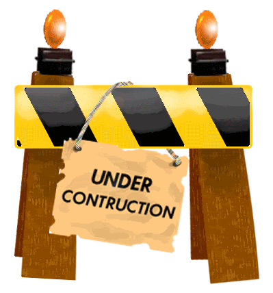
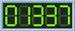

This page is currently under construction, but check back soon!

I gained an interest in radio communication when I was a teenager, and installed a CB radio in my first car.
My father, N3CAN, an amateur radio operator since the early 80s, eventually convinced me to make the move to amateur radio.
After gaining my technician class license, My crowning achievement was a 600 mile, straight-key 25w CW contact on 10m, with a homemade key.
The next year, I upgraded to General class and managed to just barely get a 40m dipole into the air on my tiny plot of land. I expanded into phone and digital on HF, and also made the jump to newfangled "digital" modulations. I generally monitor Talk Group 98003, 31075, and 98006 and the Wires-X room 28941.
On the World Wide Web, you might find me surfing the r/amateurradio subreddit.
You can send me an "electronic QSL" via LOTW or QRZ.com, or you can send me snail-mail for a paper QSL card.
You're visitor number: 